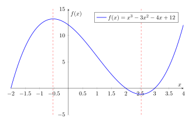
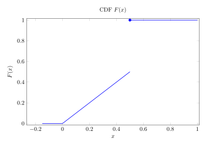
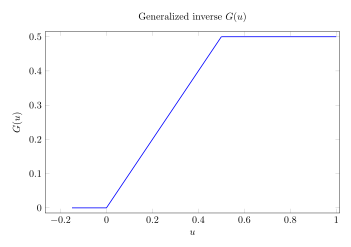

Week 3
Probability Distributions of Transformed Random Variables
The uniform distribution has a particularly important role in probability. We define the uniform distribution on \((a,b)\) where \(a < b\) as
\[f_U(u) = \frac{1}{b-a} \mathbb 1 ( a < u < b) \]
for \(u \in \mathbb R\). This is denoted \(U \sim \text{Uniform}(a,b)\).
The cdf of \(U \sim \text{Uniform}(a,b)\) is
\[F_U(u) = \left\{ \begin{array}{ll} 0 \quad \quad & \text{ if } u \leq a \\ (u-a)/(b-a) & \text{ if } u \in (a,b) \\ 1 & \text{ if } u \geq b \end{array}\right.\]
The standard uniform distribution Uniform(0,1) has the special property that \(CDF(u) = u\).
Group Exercise
If \(U \sim \text{Uniform}(0,1)\) and \(a,b \in \mathbb R\), what is the pdf of \(Y = aU + b\)?
Recall the formula for the pdf of a change of variables:
\[f_Y(y) = f_X(g^{-1}(y)) \left\lvert \frac{d}{dx} g^{-1}(y) \right\rvert\]
We have that \(g(x) = ax + b\), so \(g^{-1}(y) = (y-b)/a\).
So \(f_Y(y) = \mathbb 1(0 < (y-b)/a < 1) \left| \frac{d}{dy} (y-b)/a \right|\)
\[ = \mathbb 1(0 < (y-b)/a < 1) \frac{1}{a}\] \[ = \frac{1}{a}\mathbb 1(b < y < a+b)\]
Answer: There is a slight problem if \(a = 0\), and \(Y = b\). We need to assume that \(a\) is positive, otherwise the question is trivial.
The region of support is \((0,1)\). \(g(x) = ax + b\) and \(g(X) = Y\). Now we use the theorem. Is it strictly monotone? It is, since it’s linear. We need the inverse: \(g^{-1}(y) = \frac{y-b}{a}\). Before we use the formula, we have to make sure that \(\frac{d}{dy} g^{-1}(y) = 1/a\) is continuous. \[f_Y(y) = f_X(g^{-1}(y)) \left| \frac{d}{dy} g^{-1}(y) \right|\] \[ = \mathbb 1 (0 < \frac{y-b}{a} < 1) \left| \frac{1}{a} \right|\] \[ = \frac{1}{a} \mathbb 1 (b < y < a+b).\]
We can recognize this as a uniform distribution. \[Y \sim \text{Uniform}(b, b+a).\]
If \(U \sim \text{Uniform}(0,1)\), what is the pdf of \(Y = -\log(X)\)? Again, we use the formula \[f_Y(y) = f_X(g^{-1}(y)) \left| \frac{d}{dx} g^{-1}(y) \right|\] where \(g(x) = -\log(x)\) and therefore \(g^{-1}(y) = \exp(-y)\). Therefore \[\frac{d}{dy} g^{-1}(y) = -\exp(-y)\] and \[\left\lvert\frac{d}{dy} g^{-1}(y)\right\rvert = \exp(-y)\] So \[f_Y(y) = \mathbb 1 (0 < \exp(-y) < 1) \exp(-y)\] \[ = \mathbb 1 ( -\infty < -y < 0) \exp(-y)\] \[ = \mathbb 1 ( 0 < y < \infty) \exp(-y)\] \[ = \left\{ \begin{array}{ll} e^{-y} \quad \quad & \text{ if } > 0 \\ 0 & \text{ if } y \leq 0 \end{array} \right.\]
Change of variables piecewise
Often \(g(x)\) is not strictly monotone, but is piecewise strictly monotone, e.g., \(g(x) = x^2, \, \forall x \in \mathbb R\).
Suppose that \(X\) is a continuous random variable and let \(\mathcal X = \{ x \colon f_X(x) > 0 \}\).
Suppose \(g \colon \mathcal X \to \mathbb R\) and \(A_0, A_1, ..., A_k\) is a partition of \(\mathcal X\) such that
- \(P(X \in A_0) = 0\),
- \(g\) is strictly monotone on \(A_i\) for \(i = 1,...,k\),
- the inverse of \(g\) on \(A_i\), say \(g_i^{-1}\), has a continuous derivative on \(g(A_i) = \{ g(x) \colon x \in A_i \}\),
then
\[f_Y(y) = \sum_{i = 1}^k f_X(g^{-1}_i(y)) \left| \frac{d}{dy} g_i^{-1}(y) \right| \mathbb 1(y \in g(A_i)).\]
We were discussing in class whether or not the partitioning needs to be finite, and we think that one could use infinitely many partitions in some cases (say, for example, a distribution convolved with the \(\sin\) function).
Example: Normal to Chi-squared Transformation
A random variable \(X\) has the standard normal distribution if
\[f_X(x) = \frac{1}{\sqrt{2\pi}} \exp(-\frac{1}{2} x^2)\] for \(x \in \mathbb R\). This is denoted \(X \sim \mathcal N(0,1)\).
If \(X \sim \mathcal N(0,1)\), then the random variable \(Y = X^2\) has the chi-squared distribution, denoted \(Y \sim \chi^2\).
\(g(x) = x^2\) is strictly monotone on \(A_1 = (-\infty, 0)\) and \(A_2 = (0,\infty)\), wiith inverses \(g_1^{-1}(y) = -\sqrt{x}\) and \(g_2^{-1}(y) = \sqrt{x}\).
By the change of variables formula (in the piecewise case), for \(y > 0\) (remember we have to check when \(y \in g^{-1}(A_i)\)),
\[f_Y(y) = \frac{1}{\sqrt{2\pi}} \exp(-\frac{1}{2}(-\sqrt{y})^2)\left| \frac{-1}{2\sqrt{y}} \right| + \frac{1}{\sqrt{2\pi}} \exp(-\frac{1}{2}(\sqrt{y})^2)\left| \frac{1}{2\sqrt{y}} \right| \] \[ = \frac{1}{\sqrt{2\pi}} \frac{1}{\sqrt{y}} \exp(-\frac{1}{2} y).\]
Along the way, we had to evaluate \(\frac{d}{dy} (-\sqrt{y}) = \frac{d}{dy} (-y^{1/2}) = \frac{-1}{2}y^{-1/2}.\)
We could write this ever-so-slightly more precisely:
\[ = \left\{ \begin{array}{ll} \frac{1}{\sqrt{2\pi}} \frac{1}{\sqrt{y}} \exp(-\frac{1}{2} y) \quad & \text{ if } y > 0 \\ 0 & \text{ otherwise } \end{array} \right.\]
These kinds of problems are great for exams!
Probability Integral Transform
Let \(X\) be a random variable with cdf \(F\). If \(F\) is a continuous function, then \(F(X) \sim \text{Uniform}(0,1)\).
This is called the probability integral transform.
Example: Let \(X \sim \text{Exponential}(\lambda)\). The cdf of \(X\) is \[F(x) = (1-\exp(-\lambda x)) \mathbb 1(x > 0),\] which is a continuous function. Therefore, \[1 - \exp(-\lambda X) \sim \text{Uniform}(0,1).\]
Why can we drop the \(\mathbb 1 (X > 0)\) factor? Because \(X\) is an exponential variable, so \(X > 0\) with probability 1. This is like asking \[(1-e^{-\lambda x}) \mathbb 1 (X > 0) \stackrel{d}{=} (1-e^{-\lambda x})?\]
Can we simplify further? Yes! \(\text{Uniform}(0,1) = 1 - \text{Uniform}(0,1)\).
So we can rewrite this:
\[\exp{-\lambda x} = \text{Uniform}(0,1).\]
Generalized Inverse of a cdf
A cdf \(F\) can fail to be invertible in two ways:
- \(F(x) = F(y)\) for some \(x \neq y\) (it is flat in some region), or
- \(F\) is discontinuous at some \(x\) (it has a jump at some point).
The generalized inverse of a cdf \(F\) is the function
\[G(u) = \inf\{x \in \mathbb R\colon F(x) \geq u \}\] for \(u \in (0,1).\) We write \(F_{-1}\) to denote this function.
When \(F\) is invertible, the generalized inverse equals the inverse, so there is no conflict in notation.


Inverse Probability Integral Transform
Let \(F\) be any cdf. If \(U \sim \text{Uniform}(0,1)\) then \(F^{-1}(U)\) is a random variable with cdf \(F\).
This is called the inverse probability integral transform or the Smirnov transform.
The two transforms can be summarized as follows. Suppose \(U \sim \text{Uniform}(0,1)\) and \(X\) is a random variable with cdf \(F\). Then
- \(F^{-1}(U) \stackrel{d}{=} X.\)
- \(F(X) \stackrel{d}{=} U\) if \(F\) is continuous, but not otherwise.
Activity: What is the distribution of \(F(X)\) in this example?
My thoughts:
If \[F(x) = \left\{ \begin{array}{ll} 0 \quad & \text{ if } x \leq 0 \\ x \quad & \text{ if } 0 < x < .5 \\ 1 & \text{ if } .5 \leq x \end{array}\right.\]
So if we take the derivative, \[\frac{d}{dx} F(x) = f_X(x) = \left\{ \begin{array}{ll} 0 \quad & \text{ if } x \leq 0 \\ 1 \quad & \text{ if } 0 < x < .5 \\ 0 & \text{ if } .5 \leq x \end{array} \right. \]
Another student pointed out that looking at the height of the jump, there’s \(Pr(X = .5) = .5\),
So is it \(f_X(x) = \mathbb 1(0 < x < 0.5) + .5 \times \delta_{x = .5}(x)\)?
There is a small mistake. The delta-distribution should be at 1, because when \(x=1\), \(F(x) = 1\).
So \[F(x) = \left\{ \begin{array}{ll} 1 & \text{ with probability }\frac{1}{2} \\ \text{Uniform}(0,\frac{1}{2}) & \text{ with probability } \frac{1}{2} \end{array} \right.\]
Why should we care about this? Well it’s really useful computationally for generating random numbers that have different probability distributions from the uniform distribution. The Mersenne-Twister algorithm is the state of the art for generating uniform distribution random samples, and then often to get random numbers from other distributions one employs the above type of transformations under-the-hood.
Expected Values
The expected value denoted \(\mathbb E(X)\) or \(\mathbb EX\) is the average over all values that the random variable takes weighted according to their probability or probability density. It is also referred to as the expectation or mean of \(X\).
Let \(X\) be a random variable and let \(g(x)\) be a measurable function. If \(X\) is discrete then the expected value is
\[\mathbb Eg(X) = \sum_{x \in \mathcal X} g(x) f(x)\]
Where \(\mathcal X = \{ X(s) : s \in S \}\) is the range of \(X\) and \(f(x)\) is the pmf of \(X\).
If \(X\) is continuous then the expected value of \(g(X)\) is \[\mathbb Eg(X) = \int_{-\infty}^\infty g(x) f(x) \, dx\] where \(f(x)\) is the pdf of \(X\).
Mean of a Bernoulli Random Variable
A random variable \(X\) has the \(\text{Bernoulli}(q)\) distribution if it has pmf
\[f_X(x) = P(X=x) = \left\{ \begin{array}{ll} q \quad & \text{if } x = 1 \\ 1 - q \quad & \text{if } x = 0 \\ \end{array}\right.\]
\(X\) can be thought of as the outcome of a coin-flip.
If \(X \sim \text{Bernoulli}(q)\) then the mean of \(X\) is
\[\mathbb EX = \sum_{x \in \{ 0, 1\} xf_X(x)\] \[ = \sum_{x \in \{ 0, 1\} x q^x(1-q)^{1-x}\] \[ = 0 \times (1-q) + 1 \times q\] \[ = q.\]
Mean of an Exponential Random Variable
Suppose \(X \sim \text{Exponential}(\beta)\). The pdf of \(X\) is \[f_X(x) = \beta (-\beta x) \mathbb 1(x > 0).\]
The mean of \(X\) is
\[\mathbb EX = \int_{-\infty}^\infty x f_X(x) dx\] \[ = \int_{0}^\infty x \beta \exp(-\beta x) \, dx\] \[ = (\text{using integration by parts, details omitted})\] \[ = \int_{0}^\infty \exp(-\beta x) \, dx\] \[ = 1/\beta.\]
St. Petersburg Paradox
Consider the following betting game.
The player pays \(c\) cents to play one time.
A fair coin is tossed repeatedly until it comes up tails.
The player wins \(2^x\) cents where \(x =\) number of coin tosses.
- If you are managing a casino offering this game, how much should you charge players per play?
We should charge them enough such that the expected value of the casino’s earnings is positive (ideally with a margin).
If their winnings are \(\mathbb E2^X\) where \(X \sim Pr(\text{it takes } k \text{ flips to get one tails}) = \left(\frac{1}{2}\right)^k\), then the casinos expected earnings are \(c - \mathbb E2^X\).
If \(g(x) = 2^x\), then the transformation of our variable is:
\[f_{2^X}(x) = \frac{1}{2}^{\log_2{k}} | \frac{d}{dx} \log_2(x) |\]
And we would calculate out \(\mathbb E2^X\) using that formula?
Answer:
We should have looked at it as a Geometric random variable. The expected value of a Geometric random variable…
\[X \sim \text{Geometric}\left(\frac{1}{2}\right)\] \[f_X(x) = Pr(X = x) = \left( \frac{1}{2} \right)^x \mathbb 1 ( x \in \{ 1, 2, 3, ... \}).\]
Let \(g(x)\) represent the winnings.
| x | 1 | 2 | 3 |
|---|---|---|---|
| f(x) | 1/2 | 1/4 | 1/8 |
| g(x) | 2 | 4 | 8 |
\[\mathbb E(\text{winnings}) = \mathbb E(g(X)) = \sum_{x=1}^\infty g(x) f(x)\]
\[ = 2\frac{1}{2} + 2^2\frac{1}{2^2} + 2^3 \frac{1}{2^3} + ...\] \[ = 1 + 1 + 1 + ... = \infty\]
But at the same time, intuitionally, if you’re playing this game, experientally, most of the time one plays the payout is low.
So one should think about instead the probability of getting a payout that is \(c_1 > 0\) higher than one pays, and one wants the probability to be quite a bit higher of getting that payout to be quite a bit greater than \(50\%\), not just slightly above.
How does the law of large numbers apply?
\[\frac{1}{n} \sum_{i=1}^n g(X_i) \to \mathbb Eg(X)\]
- If you are a player and you can only play one time, how much would you pay to play?
This is left more subjective and depends on (as above) how much return on investment one desires and with what probability.
Example “Dicey” St. Petersburg
To make it more exciting, suppose the game is modified as follows.
- There is no cost to play.
- A fair coin is tossed until it comes up tails (say, \(x\) times).
- The player rolls a pair of dice.
- If the dice comes up “snake eyes”, that is \((1,1)\), then the player pays \(35 \times 2^x\) cents, otherwise the player pays \(2^x\) cents.
What is the expected value, in cents, for the player?
What’s the probability of getting snake-eyes: \(1/36\), and the chance of winning is \(35/36\).
So the expected value of winnings for the player is:
\[\mathbb E(\text{winnings}) = \mathbb E(2^x f_X(x) \frac{35}{36} - 2^x f_X(x) \frac{1}{36})\]
\[ = \sum_{x=1}^\infty 2^x f(x) \frac{35}{36} + \sum_{x=1}^\infty (-35\cdot 2^x) f(x) \frac{1}{36}\]
\[ = \sum_{x=1}^\infty 2^x f(x) \left(\frac{35}{36} - \frac{35}{36}\right) = 0\]
But earlier we showed that the \(\mathbb E(\text{winnings}) = \infty\) before introducing the “dicey” version of the game.
So really, this is like \[\mathbb E(\text{winnings}) = \infty \cdot \frac{35}{36} - \infty \cdot \frac{35}{36}, \text{ which is not defined.}\]
Even if we changed the “dicey” game so the payer only has to pay \(2^x\) instead of \(35 \times 2^x\)
So we say the expected value does not exist in this case.
Notably, the conditional expectation does exist. We can condition on \(X\) and find that \(\mathbb E(W | X) = 0\) (in the original specification of the “dicey” game).
It’s kind of a good puzzle as to how it is that \(\mathbb E(W|X) = 0\) even though the law of iterated expectations tells us that \(\mathbb E(W) = \mathbb E(\mathbb E(W|X)) = \text{undefined}\)
Takeaways:
Sometimes, expected values aren’t the right way to think about “average” outcomes.
Nicolas Bernoulli proposed the St. Petersburg paradox in 1713 to illustrate this.
Nicolas was the nephew of Jacob Bernoulli, who we met earlier, one of the many famous mathematicians and scientists in the Bernoulli family in the 1600-1700s.
Properties of Expectation
Let \(X\) be a random variable with range \(\mathcal X\) and let \(g,h \colon \mathcal X \to \mathbb R\) be measurable functions such that \(\mathbb Eg(X)\) and \(\mathbb Eh(X)\) exist and are finite.
The following properties hold:
- \(\mathbb E(c\, g(X)) = c \mathbb Eg(X)\) for any \(c \in \mathbb R\).
- \(\mathbb E(g(X) + h(X)) = \mathbb Eg(X) + \mathbb Eh(X)\)
- If \(g(x) \leq h(x)\) for all \(x \in \mathcal X\), then \(\mathbb Eg(X) \leq \mathbb Eh(X)\).
Expectation minimizes the mean squared error
Suppose we want to choose one point \(a\) that predicts \(Y\) as closely as possible (for instance, as in regression).
If we define “close” in terms of mean squared error, \(\mathbb E(|Y - a|^2)\), then \(\mathbb EY\) is the optimal choice of \(a\).
To see this, observe that \[\mathbb E(|Y-a|^2) = \mathbb E(Y^2 - 2aY + a^2)\] \[ = \mathbb EY^2 - 2a\mathbb EY + a^2.\]
To minimize, set the derivative equal to zero:
\[ 0 = \frac{d}{da} \mathbb E(|Y-a|^2) = -2\mathbb EY + 2a\]
and solve for \(a\) to obtain \(a = \mathbb EY\).
Existence of Expected Values
The positive part of \(X\), denoted \(X^+\), is \(X^+ = \max(X,0)\).
The negative part of \(X\), denoted \(X^-\), is \(X^- = -\min(X,0)\).
Note that \(X = X^+ - X^-\) and \(|X| = X^+ + X^-\).
Existence vs. Finiteness
We say that the expected value of \(X\) exists if either \(\mathbb EX^+ < \infty\) or \(\mathbb EX^- < \infty\) or both. This definition differs from Casella & Berger’s definition.
If \(\mathbb E|X| < \infty\) then \(\mathbb EX\) exists.
- This is a sufficient (but not necessary) condition for existence.
- Recall that \(|X| = X^+ + X^-\), so \(\mathbb E|X| = \mathbb EX^+ + \mathbb EX^-\).
- Therefore if \(\mathbb E|X| < \infty\), then \(\mathbb EX^+ < \infty\) and \(\mathbb EX^- < \infty\), since \(X^+ \geq 0\) and \(X^- \geq 0\).
In fact, if \(\mathbb E|X| < \infty\), then \(\mathbb EX\) is finite. That is, \(\mathbb EX \in \mathbb R\). This is because \(\mathbb EX = \mathbb EX^+ - \mathbb EX^-\).
Why does \(\mathbb E|X|\) always exist? Because \(|X|^- = 0\) and hence \(\mathbb E|X|^- < \infty\), and therefore we satisfy the definition of existence for an expectation that either the expectation of the positive part or the negative part are finite.
The only time the expectation doesn’t exist is when the expectation of the positive part and negative part are both infinite (resulting in \(\mathbb EX = \mathbb EX^+ - \mathbb EX^- = \infty - \infty = \text{undefined}\)).